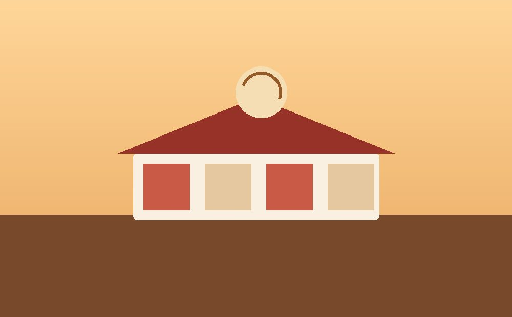

Contreras Family Bakery

The Challenge
Maria Contreras owns a family bakery in Sacramento and runs its day-to-day along with her own marketing, which meant she had no time to manage a complicated system. She was taking custom cake orders over the phone and through direct messages, which worked until the holiday rush, when messages piled up faster than she could answer them and a few orders genuinely slipped through the cracks. She was clear from our first conversation that she browses her own business tools on her phone between customers, so anything I built had to work there first, not as an afterthought.
The Solution
Rather than a full shopping cart she did not need, I built a structured online ordering page: a menu with real photos and prices, a simple order form with a date picker for pickup, a cake-size select list, and a notes field for custom requests, all routed to the email she already checks constantly. I kept the whole page to a single column on mobile so nothing required pinching or zooming, and made the call-to-action button large enough to hit accurately on a phone screen with one thumb while standing at the counter.
I also rebuilt the photography plan around what actually sells pastries, since the old site used one blurry photo taken years ago. Every product image is now sized and compressed specifically for the web so the page still loads quickly over the bakery's back-office WiFi, which was noticeably slower than a customer's home connection.
The Result
Maria now gets structured order requests with all the details she needs up front, pickup date, size, and any custom notes, instead of trying to piece that information together from a text thread. That alone cut down on the back-and-forth messages during her busiest weeks, which was the specific problem she hired me to fix.
Running a small business site with the same problem?
You do not need a full storefront to make ordering easier for your customers, or for you.
Get in touch